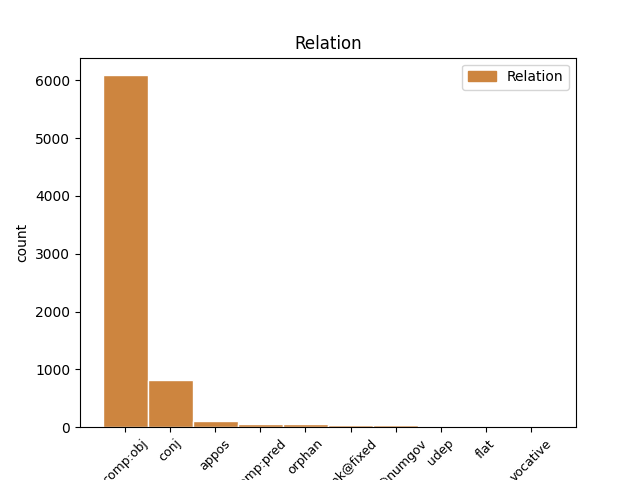
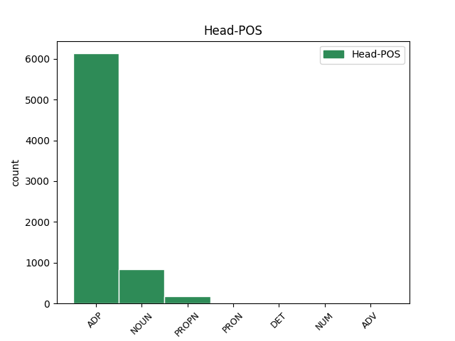
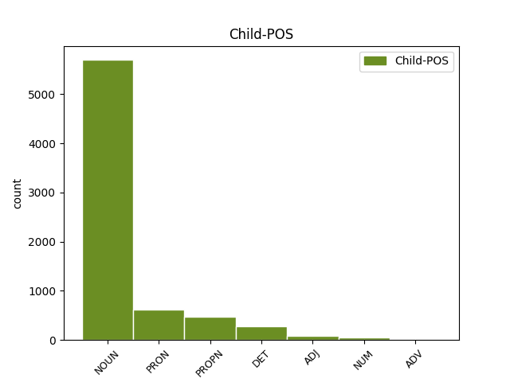

Distribution of features within this leaf



Agreement Rules sorted by frequency.
- When the dependent token is the direct object complements(comp:obj) of the head token, and the head token is ADP and the dependent token is NOUN.
1 Polícia _ _ _ _ 0 _ _ _
2 včera _ _ _ _ 0 _ _ _
3 oznámila _ _ _ _ 0 _ _ _
4 , _ _ _ _ 0 _ _ _
5 že _ _ _ _ 0 _ _ _
6 Korac _ _ _ _ 0 _ _ _
7 pri _ _ _ _ 0 _ _ _
8 pokuse _ _ _ _ 0 _ _ _
9 o o ADP Eu4 AdpType=Prep|Case=Acc 0 _ _ _
10 zadržanie zadržanie NOUN SSns4 Case=Acc|Gender=Neut|Number=Sing 9 comp:obj _ _
11 spáchal _ _ _ _ 0 _ _ _
12 samovraždu _ _ _ _ 0 _ _ _
13 . _ _ _ _ 0 _ _ _
1 Príslušníka príslušník NOUN SSms4 Animacy=Anim|Case=Acc|Gender=Masc|Number=Sing 0 _ _ _
2 vojenskej _ _ _ _ 0 _ _ _
3 polície _ _ _ _ 0 _ _ _
4 , _ _ _ _ 0 _ _ _
5 poľovníka poľovník NOUN SSms4 Animacy=Anim|Case=Acc|Gender=Masc|Number=Sing 1 conj _ _
6 a _ _ _ _ 0 _ _ _
7 manželský _ _ _ _ 0 _ _ _
8 pár _ _ _ _ 0 _ _ _
9 v _ _ _ _ 0 _ _ _
10 stredných _ _ _ _ 0 _ _ _
11 rokoch _ _ _ _ 0 _ _ _
12 . _ _ _ _ 0 _ _ _
1 Sebecký _ _ _ _ 0 _ _ _
2 pocit _ _ _ _ 0 _ _ _
3 , _ _ _ _ 0 _ _ _
4 že _ _ _ _ 0 _ _ _
5 sme _ _ _ _ 0 _ _ _
6 opäť _ _ _ _ 0 _ _ _
7 o o ADP Eu4 AdpType=Prep|Case=Acc 0 _ _ _
8 čosi čosi PRON PFns4 Case=Acc|Gender=Neut|Number=Sing|PronType=Ind 7 comp:obj _ _
9 starší _ _ _ _ 0 _ _ _
10 . _ _ _ _ 0 _ _ _
1 Rád _ _ _ _ 0 _ _ _
2 by _ _ _ _ 0 _ _ _
3 som _ _ _ _ 0 _ _ _
4 veril _ _ _ _ 0 _ _ _
5 čestnosti _ _ _ _ 0 _ _ _
6 politikov _ _ _ _ 0 _ _ _
7 , _ _ _ _ 0 _ _ _
8 ale _ _ _ _ 0 _ _ _
9 realita _ _ _ _ 0 _ _ _
10 na na ADP Eu6 AdpType=Prep|Case=Loc 0 _ _ _
11 Slovensku slovensko PROPN SSns6:r Case=Loc|Gender=Neut|Number=Sing 10 comp:obj _ _
12 je _ _ _ _ 0 _ _ _
13 zatiaľ _ _ _ _ 0 _ _ _
14 iná _ _ _ _ 0 _ _ _
15 . _ _ _ _ 0 _ _ _
1 Šetrí _ _ _ _ 0 _ _ _
2 aj _ _ _ _ 0 _ _ _
3 pani _ _ _ _ 0 _ _ _
4 ministerka _ _ _ _ 0 _ _ _
5 financií _ _ _ _ 0 _ _ _
6 , _ _ _ _ 0 _ _ _
7 ktorá _ _ _ _ 0 _ _ _
8 stále _ _ _ _ 0 _ _ _
9 nevylučuje _ _ _ _ 0 _ _ _
10 ďalšie _ _ _ _ 0 _ _ _
11 zvyšovania _ _ _ _ 0 _ _ _
12 cien _ _ _ _ 0 _ _ _
13 a _ _ _ _ 0 _ _ _
14 zodpovednosť _ _ _ _ 0 _ _ _
15 za za ADP Eu4 AdpType=Prep|Case=Acc 0 _ _ _
16 to to DET PFns4 Case=Acc|Gender=Neut|Number=Sing|PronType=Dem 15 comp:obj _ _
17 prenechala _ _ _ _ 0 _ _ _
18 na _ _ _ _ 0 _ _ _
19 vedúcich _ _ _ _ 0 _ _ _
20 úsekov _ _ _ _ 0 _ _ _
21 ? _ _ _ _ 0 _ _ _
1 FRANTIŠEK _ _ _ _ 0 _ _ _
2 PODHRADSKÝ podhradský PROPN SAms1:r Animacy=Anim|Case=Nom|Gender=Masc|Number=Sing 0 _ _ _
3 , _ _ _ _ 0 _ _ _
4 Ilava ilava PROPN SSfs1:r Case=Nom|Gender=Fem|Number=Sing 2 conj _ _
1 Potom _ _ _ _ 0 _ _ _
2 začul _ _ _ _ 0 _ _ _
3 ďalší _ _ _ _ 0 _ _ _
4 zvuk zvuk NOUN SSis4 Animacy=Inan|Case=Acc|Gender=Masc|Number=Sing 0 _ _ _
5 — _ _ _ _ 0 _ _ _
6 ľudské _ _ _ _ 0 _ _ _
7 hlasy hlas NOUN SSip4 Animacy=Inan|Case=Acc|Gender=Masc|Number=Plur 4 appos _ SpaceAfter=No
8 ! _ _ _ _ 0 _ _ _
1 V _ _ _ _ 0 _ _ _
2 zápale _ _ _ _ 0 _ _ _
3 hry _ _ _ _ 0 _ _ _
4 Maja _ _ _ _ 0 _ _ _
5 prihrala _ _ _ _ 0 _ _ _
6 Vilkovi _ _ _ _ 0 _ _ _
7 , _ _ _ _ 0 _ _ _
8 ten _ _ _ _ 0 _ _ _
9 prudko _ _ _ _ 0 _ _ _
10 kopol _ _ _ _ 0 _ _ _
11 do _ _ _ _ 0 _ _ _
12 lopty _ _ _ _ 0 _ _ _
13 a _ _ _ _ 0 _ _ _
14 lopta _ _ _ _ 0 _ _ _
15 zmizla _ _ _ _ 0 _ _ _
16 v v ADP Eu6 AdpType=Prep|Case=Loc 0 _ _ _
17 kroví krovie ADJ AAns6x Case=Loc|Degree=Pos|Gender=Neut|Number=Sing 16 comp:obj _ SpaceAfter=No
18 . _ _ _ _ 0 _ _ _
1 Na na ADP Eu4 AdpType=Prep|Case=Acc 0 _ _ _
2 rozdiel rozdiel NOUN SSis4 Animacy=Inan|Case=Acc|Gender=Masc|Number=Sing 1 unk@fixed _ _
3 od _ _ _ _ 0 _ _ _
4 iných _ _ _ _ 0 _ _ _
5 stretnutí _ _ _ _ 0 _ _ _
6 v _ _ _ _ 0 _ _ _
7 ten _ _ _ _ 0 _ _ _
8 večer _ _ _ _ 0 _ _ _
9 nepila _ _ _ _ 0 _ _ _
10 . _ _ _ _ 0 _ _ _
1 “ _ _ _ _ 0 _ _ _
2 Neviete _ _ _ _ 0 _ _ _
3 , _ _ _ _ 0 _ _ _
4 že _ _ _ _ 0 _ _ _
5 vám _ _ _ _ 0 _ _ _
6 piraňa _ _ _ _ 0 _ _ _
7 za za ADP Eu4 AdpType=Prep|Case=Acc 0 _ _ _
8 pár pár NUM NUns4 Case=Acc|Gender=Neut|Number=Sing 7 comp:obj _ _
9 sekúd _ _ _ _ 0 _ _ _
10 obžerie _ _ _ _ 0 _ _ _
11 všetko _ _ _ _ 0 _ _ _
12 mäso _ _ _ _ 0 _ _ _
13 ? _ _ _ _ 0 _ _ _
14 “ _ _ _ _ 0 _ _ _
1 Nezískala _ _ _ _ 0 _ _ _
2 ho _ _ _ _ 0 _ _ _
3 ani _ _ _ _ 0 _ _ _
4 Matica matica PROPN SSfs1:r Case=Nom|Gender=Fem|Number=Sing 0 _ _ _
5 , _ _ _ _ 0 _ _ _
6 ani _ _ _ _ 0 _ _ _
7 občianske _ _ _ _ 0 _ _ _
8 združenie združenie NOUN SSns1 Case=Nom|Gender=Neut|Number=Sing 4 conj _ _
9 Komorra _ _ _ _ 0 _ _ _
10 a _ _ _ _ 0 _ _ _
11 nedarí _ _ _ _ 0 _ _ _
12 sa _ _ _ _ 0 _ _ _
13 to _ _ _ _ 0 _ _ _
14 ani _ _ _ _ 0 _ _ _
15 gymnáziu _ _ _ _ 0 _ _ _
16 . _ _ _ _ 0 _ _ _
1 Malo _ _ _ _ 0 _ _ _
2 by _ _ _ _ 0 _ _ _
3 ísť _ _ _ _ 0 _ _ _
4 o _ _ _ _ 0 _ _ _
5 Benedikta benedikt PROPN SSms4:r Animacy=Anim|Case=Acc|Gender=Masc|Number=Sing 0 _ _ _
6 , _ _ _ _ 0 _ _ _
7 Cyrila _ _ _ _ 0 _ _ _
8 , _ _ _ _ 0 _ _ _
9 Metoda _ _ _ _ 0 _ _ _
10 , _ _ _ _ 0 _ _ _
11 Brigitu _ _ _ _ 0 _ _ _
12 , _ _ _ _ 0 _ _ _
13 Katarínu _ _ _ _ 0 _ _ _
14 a _ _ _ _ 0 _ _ _
15 Teréziu _ _ _ _ 0 _ _ _
16 , _ _ _ _ 0 _ _ _
17 všetko _ _ _ _ 0 _ _ _
18 svätých svätý NOUN SAmp4 Animacy=Anim|Case=Acc|Gender=Masc|Number=Plur 5 appos _ SpaceAfter=No
19 . _ _ _ _ 0 _ _ _
1 FOTO foto NOUN SSns1 Case=Nom|Gender=Neut|Number=Sing 0 _ _ _
2 PRE _ _ _ _ 0 _ _ _
3 SME _ _ _ _ 0 _ _ _
4 - _ _ _ _ 0 _ _ _
5 VERONIKA _ _ _ _ 0 _ _ _
6 JANUŠKOVÁ janušková PROPN SAfs1:r Case=Nom|Gender=Fem|Number=Sing 1 conj _ _
1 Príslušníka _ _ _ _ 0 _ _ _
2 vojenskej _ _ _ _ 0 _ _ _
3 polície _ _ _ _ 0 _ _ _
4 , _ _ _ _ 0 _ _ _
5 poľovníka poľovník NOUN SSms4 Animacy=Anim|Case=Acc|Gender=Masc|Number=Sing 0 _ _ _
6 a _ _ _ _ 0 _ _ _
7 manželský _ _ _ _ 0 _ _ _
8 pár pár NOUN SSis4 Animacy=Inan|Case=Acc|Gender=Masc|Number=Sing 5 orphan _ _
9 v _ _ _ _ 0 _ _ _
10 stredných _ _ _ _ 0 _ _ _
11 rokoch _ _ _ _ 0 _ _ _
12 . _ _ _ _ 0 _ _ _
1 Malá _ _ _ _ 0 _ _ _
2 húsenička húsenička NOUN SSfs1 Case=Nom|Gender=Fem|Number=Sing 0 _ _ _
3 po _ _ _ _ 0 _ _ _
4 márnom _ _ _ _ 0 _ _ _
5 čakaní _ _ _ _ 0 _ _ _
6 zaspávala _ _ _ _ 0 _ _ _
7 hladná hladný ADJ AAfs1x Case=Nom|Degree=Pos|Gender=Fem|Number=Sing 2 comp:pred _ SpaceAfter=No
8 . _ _ _ _ 0 _ _ _
1 O _ _ _ _ 0 _ _ _
2 chvíľu _ _ _ _ 0 _ _ _
3 priviedla _ _ _ _ 0 _ _ _
4 vrtuľník vrtuľník NOUN SSis4 Animacy=Inan|Case=Acc|Gender=Masc|Number=Sing 0 _ _ _
5 — _ _ _ _ 0 _ _ _
6 vážku _ _ _ _ 0 _ _ _
7 Krásku kráska PROPN SSfs4:r Case=Acc|Gender=Fem|Number=Sing 4 appos _ SpaceAfter=No
8 . _ _ _ _ 0 _ _ _
1 Mám _ _ _ _ 0 _ _ _
2 osem _ _ _ _ 0 _ _ _
3 nôh _ _ _ _ 0 _ _ _
4 , _ _ _ _ 0 _ _ _
5 osem osem NUM NUns4 Case=Acc|Gender=Neut|Number=Sing 0 _ _ _
6 očí _ _ _ _ 0 _ _ _
7 a _ _ _ _ 0 _ _ _
8 sedem sedem NUM NUns4 Case=Acc|Gender=Neut|Number=Sing 5 conj _ _
9 chutí _ _ _ _ 0 _ _ _
10 . _ _ _ _ 0 _ _ _
1 Tekla tekla PROPN SSfs1:r Case=Nom|Gender=Fem|Number=Sing 0 _ _ _
2 sedela _ _ _ _ 0 _ _ _
3 prikrčená prikrčený ADJ Gtfs1x Case=Nom|Degree=Pos|Gender=Fem|Number=Sing|Polarity=Pos|VerbForm=Part|Voice=Pass 1 comp:pred _ _
4 v _ _ _ _ 0 _ _ _
5 kúte _ _ _ _ 0 _ _ _
6 a _ _ _ _ 0 _ _ _
7 zlomyseľne _ _ _ _ 0 _ _ _
8 pozorovala _ _ _ _ 0 _ _ _
9 jej _ _ _ _ 0 _ _ _
10 márne _ _ _ _ 0 _ _ _
11 úsilie _ _ _ _ 0 _ _ _
12 . _ _ _ _ 0 _ _ _
1 Motýľ _ _ _ _ 0 _ _ _
2 Emanuel _ _ _ _ 0 _ _ _
3 poletoval _ _ _ _ 0 _ _ _
4 kdesi _ _ _ _ 0 _ _ _
5 nad nad ADP Eu7 AdpType=Prep|Case=Ins 0 _ _ _
6 lúkami lúka NOUN SSfp7 Case=Ins|Gender=Fem|Number=Plur 5 udep _ _
7 a _ _ _ _ 0 _ _ _
8 Makulienka _ _ _ _ 0 _ _ _
9 ostala _ _ _ _ 0 _ _ _
10 doma _ _ _ _ 0 _ _ _
11 sama _ _ _ _ 0 _ _ _
12 . _ _ _ _ 0 _ _ _
1 Ako _ _ _ _ 0 _ _ _
2 sa _ _ _ _ 0 _ _ _
3 hovorilo _ _ _ _ 0 _ _ _
4 , _ _ _ _ 0 _ _ _
5 túto _ _ _ _ 0 _ _ _
6 škandalóznu _ _ _ _ 0 _ _ _
7 informáciu _ _ _ _ 0 _ _ _
8 potvrdila _ _ _ _ 0 _ _ _
9 sama sám DET PFfs1 Case=Nom|Gender=Fem|Number=Sing|PronType=Emp 10 comp:pred _ _
10 herečka herečka NOUN SSfs1 Case=Nom|Gender=Fem|Number=Sing 0 _ _ _
11 , _ _ _ _ 0 _ _ _
12 ktorá _ _ _ _ 0 _ _ _
13 sa _ _ _ _ 0 _ _ _
14 nervovo _ _ _ _ 0 _ _ _
15 zrútila _ _ _ _ 0 _ _ _
16 . _ _ _ _ 0 _ _ _
1 Dal _ _ _ _ 0 _ _ _
2 som _ _ _ _ 0 _ _ _
3 jej _ _ _ _ 0 _ _ _
4 aj _ _ _ _ 0 _ _ _
5 nejaké _ _ _ _ 0 _ _ _
6 ruble _ _ _ _ 0 _ _ _
7 a _ _ _ _ 0 _ _ _
8 povedal _ _ _ _ 0 _ _ _
9 som _ _ _ _ 0 _ _ _
10 , _ _ _ _ 0 _ _ _
11 aby _ _ _ _ 0 _ _ _
12 za _ _ _ _ 0 _ _ _
13 ne _ _ _ _ 0 _ _ _
14 nakúpila _ _ _ _ 0 _ _ _
15 pivo pivo NOUN SSns4 Case=Acc|Gender=Neut|Number=Sing 0 _ _ _
16 a _ _ _ _ 0 _ _ _
17 ešte _ _ _ _ 0 _ _ _
18 niečo niečo PRON PFns4 Case=Acc|Gender=Neut|Number=Sing|PronType=Ind 15 conj _ _
19 iné _ _ _ _ 0 _ _ _
20 . _ _ _ _ 0 _ _ _
1 Predavači _ _ _ _ 0 _ _ _
2 tu _ _ _ _ 0 _ _ _
3 núkali _ _ _ _ 0 _ _ _
4 všeličo všeličo PRON PFns4 Case=Acc|Gender=Neut|Number=Sing|PronType=Ind 0 _ _ _
5 od _ _ _ _ 0 _ _ _
6 výmyslu _ _ _ _ 0 _ _ _
7 sveta _ _ _ _ 0 _ _ _
8 — _ _ _ _ 0 _ _ _
9 mosadzný _ _ _ _ 0 _ _ _
10 riad riad NOUN SSis4 Animacy=Inan|Case=Acc|Gender=Masc|Number=Sing 4 appos _ SpaceAfter=No
11 , _ _ _ _ 0 _ _ _
12 sladké _ _ _ _ 0 _ _ _
13 datle _ _ _ _ 0 _ _ _
14 i _ _ _ _ 0 _ _ _
15 čerstvé _ _ _ _ 0 _ _ _
16 ryby _ _ _ _ 0 _ _ _
17 . _ _ _ _ 0 _ _ _
1 Motýľ _ _ _ _ 0 _ _ _
2 Emanuel _ _ _ _ 0 _ _ _
3 poletoval _ _ _ _ 0 _ _ _
4 kdesi _ _ _ _ 0 _ _ _
5 nad _ _ _ _ 0 _ _ _
6 lúkami _ _ _ _ 0 _ _ _
7 a _ _ _ _ 0 _ _ _
8 Makulienka makulienka PROPN SSfs1:r Case=Nom|Gender=Fem|Number=Sing 0 _ _ _
9 ostala _ _ _ _ 0 _ _ _
10 doma _ _ _ _ 0 _ _ _
11 sama sám DET PFfs1 Case=Nom|Gender=Fem|Number=Sing|PronType=Emp 8 comp:pred _ SpaceAfter=No
12 . _ _ _ _ 0 _ _ _
1 Môj _ _ _ _ 0 _ _ _
2 potôčik _ _ _ _ 0 _ _ _
3 vyrazil _ _ _ _ 0 _ _ _
4 von _ _ _ _ 0 _ _ _
5 , _ _ _ _ 0 _ _ _
6 rozlial _ _ _ _ 0 _ _ _
7 sa _ _ _ _ 0 _ _ _
8 a _ _ _ _ 0 _ _ _
9 ja ja PRON PPhs1 Case=Nom|Number=Sing|Person=1|PronType=Prs 0 _ _ _
10 som _ _ _ _ 0 _ _ _
11 zostal _ _ _ _ 0 _ _ _
12 zahalený zahalený ADJ Gtms1x Animacy=Anim|Case=Nom|Degree=Pos|Gender=Masc|Number=Sing|Polarity=Pos|VerbForm=Part|Voice=Pass 9 comp:pred _ _
13 v _ _ _ _ 0 _ _ _
14 horúcej _ _ _ _ 0 _ _ _
15 pare _ _ _ _ 0 _ _ _
16 sauny _ _ _ _ 0 _ _ _
17 . _ _ _ _ 0 _ _ _
1 Aby _ _ _ _ 0 _ _ _
2 anonym _ _ _ _ 0 _ _ _
3 urobil _ _ _ _ 0 _ _ _
4 svoje _ _ _ _ 0 _ _ _
5 obvinenie _ _ _ _ 0 _ _ _
6 dôveryhodným _ _ _ _ 0 _ _ _
7 , _ _ _ _ 0 _ _ _
8 uvádzal _ _ _ _ 0 _ _ _
9 iniciálky _ _ _ _ 0 _ _ _
10 tej tá DET PFfs2 Case=Gen|Gender=Fem|Number=Sing|PronType=Dem 0 _ _ _
11 ‐ _ _ _ _ 0 _ _ _
12 ktorej ktorý DET PAfs2 Case=Gen|Gender=Fem|Number=Sing|PronType=Int,Rel 10 conj _ _
13 ženy _ _ _ _ 0 _ _ _
14 a _ _ _ _ 0 _ _ _
15 z _ _ _ _ 0 _ _ _
16 tohto _ _ _ _ 0 _ _ _
17 hľadiska _ _ _ _ 0 _ _ _
18 mala _ _ _ _ 0 _ _ _
19 Marga _ _ _ _ 0 _ _ _
20 dôvod _ _ _ _ 0 _ _ _
21 podozrievať _ _ _ _ 0 _ _ _
22 ma _ _ _ _ 0 _ _ _
23 . _ _ _ _ 0 _ _ _
1 Tvár _ _ _ _ 0 _ _ _
2 , _ _ _ _ 0 _ _ _
3 ktorú ktorý DET PAfs4 Case=Acc|Gender=Fem|Number=Sing|PronType=Int,Rel 0 _ _ _
4 mal _ _ _ _ 0 _ _ _
5 obyčajne _ _ _ _ 0 _ _ _
6 bledú bledý ADJ AAfs4x Case=Acc|Degree=Pos|Gender=Fem|Number=Sing 3 comp:pred _ SpaceAfter=No
7 , _ _ _ _ 0 _ _ _
8 mu _ _ _ _ 0 _ _ _
9 sčervenela _ _ _ _ 0 _ _ _
10 . _ _ _ _ 0 _ _ _
1 Stoly _ _ _ _ 0 _ _ _
2 a _ _ _ _ 0 _ _ _
3 stoličky _ _ _ _ 0 _ _ _
4 boli _ _ _ _ 0 _ _ _
5 prevrhnuté _ _ _ _ 0 _ _ _
6 , _ _ _ _ 0 _ _ _
7 vázy váza NOUN SSfp1 Case=Nom|Gender=Fem|Number=Plur 0 _ _ _
8 rozbité rozbitý ADJ Gtfp1x Case=Nom|Degree=Pos|Gender=Fem|Number=Plur|Polarity=Pos|VerbForm=Part|Voice=Pass 7 orphan _ LDeriv=rozbiť
9 a _ _ _ _ 0 _ _ _
10 obrazy _ _ _ _ 0 _ _ _
11 viseli _ _ _ _ 0 _ _ _
12 nakrivo _ _ _ _ 0 _ _ _
13 . _ _ _ _ 0 _ _ _
1 Túto _ _ _ _ 0 _ _ _
2 zmenu _ _ _ _ 0 _ _ _
3 nepredvídal _ _ _ _ 0 _ _ _
4 ani _ _ _ _ 0 _ _ _
5 anonym _ _ _ _ 0 _ _ _
6 , _ _ _ _ 0 _ _ _
7 ani _ _ _ _ 0 _ _ _
8 ja ja PRON PPhs1 Case=Nom|Number=Sing|Person=1|PronType=Prs 0 _ _ _
9 sám sám DET PFms1 Animacy=Anim|Case=Nom|Gender=Masc|Number=Sing|PronType=Emp 8 comp:pred _ SpaceAfter=No
10 . _ _ _ _ 0 _ _ _
1 Neurobil _ _ _ _ 0 _ _ _
2 som _ _ _ _ 0 _ _ _
3 ani _ _ _ _ 0 _ _ _
4 jedno jeden NUM NFns4 Case=Acc|Gender=Neut|Number=Sing 0 _ _ _
5 , _ _ _ _ 0 _ _ _
6 ani _ _ _ _ 0 _ _ _
7 druhé druhý ADJ NAns4 Case=Acc|Gender=Neut|Number=Sing|NumType=Ord 4 conj _ SpaceAfter=No
8 . _ _ _ _ 0 _ _ _
1 Maja _ _ _ _ 0 _ _ _
2 zaviedla _ _ _ _ 0 _ _ _
3 hostí _ _ _ _ 0 _ _ _
4 na _ _ _ _ 0 _ _ _
5 slávnostne _ _ _ _ 0 _ _ _
6 vyzdobenú _ _ _ _ 0 _ _ _
7 lúku _ _ _ _ 0 _ _ _
8 a _ _ _ _ 0 _ _ _
9 ponúkla _ _ _ _ 0 _ _ _
10 im _ _ _ _ 0 _ _ _
11 vyhliadkový _ _ _ _ 0 _ _ _
12 let _ _ _ _ 0 _ _ _
13 s _ _ _ _ 0 _ _ _
14 vážkou _ _ _ _ 0 _ _ _
15 , _ _ _ _ 0 _ _ _
16 medové _ _ _ _ 0 _ _ _
17 guľôčky _ _ _ _ 0 _ _ _
18 , _ _ _ _ 0 _ _ _
19 cukrovú _ _ _ _ 0 _ _ _
20 vatu vata NOUN SSfs4 Case=Acc|Gender=Fem|Number=Sing 0 _ _ _
21 a _ _ _ _ 0 _ _ _
22 mnoho mnoho NUM NUns4 Case=Acc|Gender=Neut|Number=Sing 20 conj _ _
23 iných _ _ _ _ 0 _ _ _
24 dobrôt _ _ _ _ 0 _ _ _
25 . _ _ _ _ 0 _ _ _
1 Bucka bucka PROPN SSfs1:r Case=Nom|Gender=Fem|Number=Sing 0 _ _ _
2 ( _ _ _ _ 0 _ _ _
3 Petronila petronila PROPN SSfs1:r Case=Nom|Gender=Fem|Number=Sing 1 flat _ SpaceAfter=No
4 ) _ _ _ _ 0 _ _ _
5 zalomila _ _ _ _ 0 _ _ _
6 krídlami _ _ _ _ 0 _ _ _
7 . _ _ _ _ 0 _ _ _
1 Tmavovlasé _ _ _ _ 0 _ _ _
2 dievča _ _ _ _ 0 _ _ _
3 sedelo _ _ _ _ 0 _ _ _
4 ihneď _ _ _ _ 0 _ _ _
5 za za ADP Eu7 AdpType=Prep|Case=Ins 0 _ _ _
6 nimi on PRON PFmp7 Animacy=Anim|Case=Ins|Gender=Masc|Number=Plur|Person=3|PronType=Prs 5 udep _ SpaceAfter=No
7 . _ _ _ _ 0 _ _ _
1 Nemohla _ _ _ _ 0 _ _ _
2 som _ _ _ _ 0 _ _ _
3 tú _ _ _ _ 0 _ _ _
4 otázku _ _ _ _ 0 _ _ _
5 zodpovedať _ _ _ _ 0 _ _ _
6 ani _ _ _ _ 0 _ _ _
7 pánu _ _ _ _ 0 _ _ _
8 Tayerlemu tayerle PROPN SFms3:r Animacy=Anim|Case=Dat|Gender=Masc|Number=Sing 0 _ _ _
9 , _ _ _ _ 0 _ _ _
10 ani _ _ _ _ 0 _ _ _
11 sebe seba PRON PPhs3 Case=Dat|Number=Sing|PronType=Prs|Reflex=Yes 8 conj _ SpaceAfter=No
12 . _ _ _ _ 0 _ _ _
1 Vtedy _ _ _ _ 0 _ _ _
2 bol _ _ _ _ 0 _ _ _
3 ôsmak _ _ _ _ 0 _ _ _
4 a _ _ _ _ 0 _ _ _
5 ja ja PRON PPhs1 Case=Nom|Number=Sing|Person=1|PronType=Prs 0 _ _ _
6 štvrtáčka štvrtáčka NOUN SSfs1 Case=Nom|Gender=Fem|Number=Sing 5 orphan _ SpaceAfter=No
7 . _ _ _ _ 0 _ _ _
1 Raz raz ADV NSis1 Animacy=Inan|Case=Nom|Gender=Masc|Number=Sing|NumType=Mult 0 _ _ _
2 , _ _ _ _ 0 _ _ _
3 dva dva NUM NNip1 Animacy=Inan|Case=Nom|Gender=Masc|Number=Plur 1 conj _ SpaceAfter=No
4 ! _ _ _ _ 0 _ _ _
1 Jeho on PRON PFms4 Animacy=Anim|Case=Acc|Gender=Masc|Number=Sing|Person=3|PronType=Prs 0 _ _ _
2 i _ _ _ _ 0 _ _ _
3 Hydru hydra PROPN SSfs4:r Case=Acc|Gender=Fem|Number=Sing 1 conj _ _
4 zasypala _ _ _ _ 0 _ _ _
5 lavína _ _ _ _ 0 _ _ _
6 kamenia _ _ _ _ 0 _ _ _
7 . _ _ _ _ 0 _ _ _
1 Maja _ _ _ _ 0 _ _ _
2 zletela _ _ _ _ 0 _ _ _
3 dole _ _ _ _ 0 _ _ _
4 a _ _ _ _ 0 _ _ _
5 po po ADP Eu4 AdpType=Prep|Case=Acc 0 _ _ _
6 prvý _ _ _ _ 0 _ _ _
7 raz raz ADV NSis4 Animacy=Inan|Case=Acc|Gender=Masc|Number=Sing|NumType=Mult 5 comp:obj _ _
8 vo _ _ _ _ 0 _ _ _
9 svojom _ _ _ _ 0 _ _ _
10 živote _ _ _ _ 0 _ _ _
11 uvidela _ _ _ _ 0 _ _ _
12 svätojánsku _ _ _ _ 0 _ _ _
13 mušku _ _ _ _ 0 _ _ _
14 . _ _ _ _ 0 _ _ _
1 Poľsko _ _ _ _ 0 _ _ _
2 bude _ _ _ _ 0 _ _ _
3 reprezentovať _ _ _ _ 0 _ _ _
4 Wojciech _ _ _ _ 0 _ _ _
5 J _ _ _ _ 0 _ _ _
6 . _ _ _ _ 0 _ _ _
7 Has _ _ _ _ 0 _ _ _
8 , _ _ _ _ 0 _ _ _
9 Českú _ _ _ _ 0 _ _ _
10 republiku republika NOUN SSfs4 Case=Acc|Gender=Fem|Number=Sing 0 _ _ _
11 Jan _ _ _ _ 0 _ _ _
12 Švankmajer _ _ _ _ 0 _ _ _
13 a _ _ _ _ 0 _ _ _
14 Slovensko slovensko PROPN SSns4:r Case=Acc|Gender=Neut|Number=Sing 10 orphan _ _
15 Štefan _ _ _ _ 0 _ _ _
16 Uher _ _ _ _ 0 _ _ _
17 . _ _ _ _ 0 _ _ _
1 U _ _ _ _ 0 _ _ _
2 ugrofínskych _ _ _ _ 0 _ _ _
3 národov _ _ _ _ 0 _ _ _
4 fungoval _ _ _ _ 0 _ _ _
5 orol orol NOUN SSms1 Animacy=Anim|Case=Nom|Gender=Masc|Number=Sing 0 _ _ _
6 ako _ _ _ _ 0 _ _ _
7 predok predok NOUN SSms1 Animacy=Anim|Case=Nom|Gender=Masc|Number=Sing 5 comp:pred _ _
8 a _ _ _ _ 0 _ _ _
9 ochranca _ _ _ _ 0 _ _ _
10 šamanov _ _ _ _ 0 _ _ _
11 . _ _ _ _ 0 _ _ _
1 Nás my PRON PPhp4 Case=Acc|Number=Plur|Person=1|PronType=Prs 0 _ _ _
2 i _ _ _ _ 0 _ _ _
3 seba seba PRON PPhs4 Case=Acc|Number=Sing|PronType=Prs|Reflex=Yes 1 conj _ _
4 samého _ _ _ _ 0 _ _ _
5 . _ _ _ _ 0 _ _ _
1 Ona _ _ _ _ 0 _ _ _
2 je _ _ _ _ 0 _ _ _
3 Turnerová _ _ _ _ 0 _ _ _
4 a _ _ _ _ 0 _ _ _
5 ja ja PRON PPhs1 Case=Nom|Number=Sing|Person=1|PronType=Prs 0 _ _ _
6 Wyseová wyseová PROPN SAfs1:r Case=Nom|Gender=Fem|Number=Sing 5 orphan _ SpaceAfter=No
7 . _ _ _ _ 0 _ _ _
8 “ _ _ _ _ 0 _ _ _
1 U _ _ _ _ 0 _ _ _
2 nás _ _ _ _ 0 _ _ _
3 jeme _ _ _ _ 0 _ _ _
4 to to DET PFns4 Case=Acc|Gender=Neut|Number=Sing|PronType=Dem 0 _ _ _
5 , _ _ _ _ 0 _ _ _
6 čo _ _ _ _ 0 _ _ _
7 sa _ _ _ _ 0 _ _ _
8 objedná _ _ _ _ 0 _ _ _
9 cez _ _ _ _ 0 _ _ _
10 donášku _ _ _ _ 0 _ _ _
11 alebo _ _ _ _ 0 _ _ _
12 mrazené _ _ _ _ 0 _ _ _
13 jedlá jedlo NOUN SSnp4 Case=Acc|Gender=Neut|Number=Plur 4 conj _ SpaceAfter=No
14 , _ _ _ _ 0 _ _ _
15 “ _ _ _ _ 0 _ _ _
16 povedal _ _ _ _ 0 _ _ _
17 Chris _ _ _ _ 0 _ _ _
18 . _ _ _ _ 0 _ _ _
1 Medzi _ _ _ _ 0 _ _ _
2 seba seba PRON PPhs4 Case=Acc|Number=Sing|PronType=Prs|Reflex=Yes 0 _ _ _
3 a _ _ _ _ 0 _ _ _
4 potkany potkan NOUN SSip4 Animacy=Inan|Case=Acc|Gender=Masc|Number=Plur 2 conj _ _
5 musí _ _ _ _ 0 _ _ _
6 postaviť _ _ _ _ 0 _ _ _
7 inú _ _ _ _ 0 _ _ _
8 ľudskú _ _ _ _ 0 _ _ _
9 bytosť _ _ _ _ 0 _ _ _
10 , _ _ _ _ 0 _ _ _
11 telo _ _ _ _ 0 _ _ _
12 inej _ _ _ _ 0 _ _ _
13 ľudskej _ _ _ _ 0 _ _ _
14 bytosti _ _ _ _ 0 _ _ _
15 . _ _ _ _ 0 _ _ _
1 " _ _ _ _ 0 _ _ _
2 Niekedy _ _ _ _ 0 _ _ _
3 , _ _ _ _ 0 _ _ _
4 " _ _ _ _ 0 _ _ _
5 poznamenala _ _ _ _ 0 _ _ _
6 , _ _ _ _ 0 _ _ _
7 " _ _ _ _ 0 _ _ _
8 pohrozia _ _ _ _ 0 _ _ _
9 človeku _ _ _ _ 0 _ _ _
10 niečím niečo PRON PFns7 Case=Ins|Gender=Neut|Number=Sing|PronType=Ind 0 _ _ _
11 -- _ _ _ _ 0 _ _ _
12 niečím niečo PRON PFns7 Case=Ins|Gender=Neut|Number=Sing|PronType=Ind 10 appos _ SpaceAfter=No
13 , _ _ _ _ 0 _ _ _
14 čomu _ _ _ _ 0 _ _ _
15 nedokáže _ _ _ _ 0 _ _ _
16 vzdorovať _ _ _ _ 0 _ _ _
17 , _ _ _ _ 0 _ _ _
18 na _ _ _ _ 0 _ _ _
19 čo _ _ _ _ 0 _ _ _
20 nedokáže _ _ _ _ 0 _ _ _
21 ani _ _ _ _ 0 _ _ _
22 pomyslieť _ _ _ _ 0 _ _ _
23 . _ _ _ _ 0 _ _ _
1 Chodbu _ _ _ _ 0 _ _ _
2 , _ _ _ _ 0 _ _ _
3 po _ _ _ _ 0 _ _ _
4 ktorej _ _ _ _ 0 _ _ _
5 ich _ _ _ _ 0 _ _ _
6 viedol _ _ _ _ 0 _ _ _
7 , _ _ _ _ 0 _ _ _
8 pokrýval _ _ _ _ 0 _ _ _
9 jemný _ _ _ _ 0 _ _ _
10 koberec _ _ _ _ 0 _ _ _
11 , _ _ _ _ 0 _ _ _
12 na _ _ _ _ 0 _ _ _
13 stenách _ _ _ _ 0 _ _ _
14 boli _ _ _ _ 0 _ _ _
15 krémové _ _ _ _ 0 _ _ _
16 tapety _ _ _ _ 0 _ _ _
17 , _ _ _ _ 0 _ _ _
18 biele _ _ _ _ 0 _ _ _
19 drevené _ _ _ _ 0 _ _ _
20 obloženie _ _ _ _ 0 _ _ _
21 , _ _ _ _ 0 _ _ _
22 všetko všetok DET PFns1 Case=Nom|Gender=Neut|Number=Sing|PronType=Tot 0 _ _ _
23 neskutočne _ _ _ _ 0 _ _ _
24 čisté čistý ADJ AAns1x Case=Nom|Degree=Pos|Gender=Neut|Number=Sing 22 orphan _ SpaceAfter=No
25 . _ _ _ _ 0 _ _ _
1 On on PRON PFms1 Animacy=Anim|Case=Nom|Gender=Masc|Number=Sing|Person=3|PronType=Prs 0 _ _ _
2 a _ _ _ _ 0 _ _ _
3 zopár zopár NUM NUns1 Case=Nom|Gender=Neut|Number=Sing 1 conj _ _
4 jemu _ _ _ _ 0 _ _ _
5 podobných _ _ _ _ 0 _ _ _
6 boli _ _ _ _ 0 _ _ _
7 poslednými _ _ _ _ 0 _ _ _
8 živými _ _ _ _ 0 _ _ _
9 spojovacími _ _ _ _ 0 _ _ _
10 článkami _ _ _ _ 0 _ _ _
11 so _ _ _ _ 0 _ _ _
12 zašlým _ _ _ _ 0 _ _ _
13 kapitalizmom _ _ _ _ 0 _ _ _
14 . _ _ _ _ 0 _ _ _
1 Na _ _ _ _ 0 _ _ _
2 spoločnom _ _ _ _ 0 _ _ _
3 výlete _ _ _ _ 0 _ _ _
4 niekde _ _ _ _ 0 _ _ _
5 v v ADP Eu6 AdpType=Prep|Case=Loc 0 _ _ _
6 Kente kent PROPN SSis6:r Animacy=Inan|Case=Loc|Gender=Masc|Number=Sing 5 udep _ _
7 zablúdili _ _ _ _ 0 _ _ _
8 . _ _ _ _ 0 _ _ _
1 On on PRON PFms1:r Animacy=Anim|Case=Nom|Gender=Masc|Number=Sing|Person=3|PronType=Prs 0 _ _ _
2 – _ _ _ _ 0 _ _ _
3 Kristus kristus PROPN SSms1:r Animacy=Anim|Case=Nom|Gender=Masc|Number=Sing 1 flat _ _
4 je _ _ _ _ 0 _ _ _
5 novou _ _ _ _ 0 _ _ _
6 možnosťou _ _ _ _ 0 _ _ _
7 orientácie _ _ _ _ 0 _ _ _
8 , _ _ _ _ 0 _ _ _
9 cestou _ _ _ _ 0 _ _ _
10 znovuzrodenia _ _ _ _ 0 _ _ _
11 , _ _ _ _ 0 _ _ _
12 novej _ _ _ _ 0 _ _ _
13 nádeje _ _ _ _ 0 _ _ _
14 a _ _ _ _ 0 _ _ _
15 lásky _ _ _ _ 0 _ _ _
16 , _ _ _ _ 0 _ _ _
17 ktorá _ _ _ _ 0 _ _ _
18 hľadá _ _ _ _ 0 _ _ _
19 tých _ _ _ _ 0 _ _ _
20 , _ _ _ _ 0 _ _ _
21 ktorí _ _ _ _ 0 _ _ _
22 sú _ _ _ _ 0 _ _ _
23 na _ _ _ _ 0 _ _ _
24 ceste _ _ _ _ 0 _ _ _
25 rezignácie _ _ _ _ 0 _ _ _
26 , _ _ _ _ 0 _ _ _
27 ubití _ _ _ _ 0 _ _ _
28 ľudským _ _ _ _ 0 _ _ _
29 egoizmom _ _ _ _ 0 _ _ _
30 a _ _ _ _ 0 _ _ _
31 hriechom _ _ _ _ 0 _ _ _
32 . _ _ _ _ 0 _ _ _
1 Toto _ _ _ _ 0 _ _ _
2 spoločenstvo _ _ _ _ 0 _ _ _
3 nám _ _ _ _ 0 _ _ _
4 poskytlo _ _ _ _ 0 _ _ _
5 hlboké _ _ _ _ 0 _ _ _
6 zážitky _ _ _ _ 0 _ _ _
7 , _ _ _ _ 0 _ _ _
8 mnoho _ _ _ _ 0 _ _ _
9 podnetov _ _ _ _ 0 _ _ _
10 na _ _ _ _ 0 _ _ _
11 zamyslenie _ _ _ _ 0 _ _ _
12 , _ _ _ _ 0 _ _ _
13 mnoho mnoho NUM NUns4 Case=Acc|Gender=Neut|Number=Sing 0 _ _ _
14 motivácie _ _ _ _ 0 _ _ _
15 k _ _ _ _ 0 _ _ _
16 modlitbám _ _ _ _ 0 _ _ _
17 a _ _ _ _ 0 _ _ _
18 pocit pocit NOUN SSis4 Animacy=Inan|Case=Acc|Gender=Masc|Number=Sing 13 conj _ _
19 Božej _ _ _ _ 0 _ _ _
20 prítomnosti _ _ _ _ 0 _ _ _
21 . _ _ _ _ 0 _ _ _
1 Marginým _ _ _ _ 0 _ _ _
2 svätcom svätec NOUN SSms7 Animacy=Anim|Case=Ins|Gender=Masc|Number=Sing 0 _ _ _
3 bol _ _ _ _ 0 _ _ _
4 taliansky _ _ _ _ 0 _ _ _
5 spevák _ _ _ _ 0 _ _ _
6 Gianni _ _ _ _ 0 _ _ _
7 Morandi _ _ _ _ 0 _ _ _
8 , _ _ _ _ 0 _ _ _
9 mojím môj DET PFms7 Animacy=Anim|Case=Ins|Gender=Masc|Number=Sing|Number[psor]=Sing|Person=1|Poss=Yes|PronType=Prs 2 conj _ _
10 Angličan _ _ _ _ 0 _ _ _
11 Tom _ _ _ _ 0 _ _ _
12 Jones _ _ _ _ 0 _ _ _
13 . _ _ _ _ 0 _ _ _
1 Škole _ _ _ _ 0 _ _ _
2 chýbali _ _ _ _ 0 _ _ _
3 priestory _ _ _ _ 0 _ _ _
4 , _ _ _ _ 0 _ _ _
5 a _ _ _ _ 0 _ _ _
6 tak _ _ _ _ 0 _ _ _
7 žiaci žiak NOUN SSmp1 Animacy=Anim|Case=Nom|Gender=Masc|Number=Plur 0 _ _ _
8 prvého _ _ _ _ 0 _ _ _
9 stupňa _ _ _ _ 0 _ _ _
10 , _ _ _ _ 0 _ _ _
11 čiže _ _ _ _ 0 _ _ _
12 aj _ _ _ _ 0 _ _ _
13 my my PRON PPhp1 Case=Nom|Number=Plur|Person=1|PronType=Prs 7 appos _ _
14 prváčikovia _ _ _ _ 0 _ _ _
15 , _ _ _ _ 0 _ _ _
16 mávali _ _ _ _ 0 _ _ _
17 vyučovanie _ _ _ _ 0 _ _ _
18 popoludní _ _ _ _ 0 _ _ _
19 . _ _ _ _ 0 _ _ _
1 Nemohol _ _ _ _ 0 _ _ _
2 som _ _ _ _ 0 _ _ _
3 sa _ _ _ _ 0 _ _ _
4 na _ _ _ _ 0 _ _ _
5 nič _ _ _ _ 0 _ _ _
6 sústrediť _ _ _ _ 0 _ _ _
7 , _ _ _ _ 0 _ _ _
8 nevládal _ _ _ _ 0 _ _ _
9 som _ _ _ _ 0 _ _ _
10 zniesť _ _ _ _ 0 _ _ _
11 nikoho nikto PRON PFms4 Animacy=Anim|Case=Acc|Gender=Masc|Number=Sing|PronType=Neg 0 _ _ _
12 pri _ _ _ _ 0 _ _ _
13 sebe _ _ _ _ 0 _ _ _
14 : _ _ _ _ 0 _ _ _
15 ani _ _ _ _ 0 _ _ _
16 Margu marga PROPN SSfs4:r Case=Acc|Gender=Fem|Number=Sing 11 appos _ SpaceAfter=No
17 , _ _ _ _ 0 _ _ _
18 ani _ _ _ _ 0 _ _ _
19 mamu _ _ _ _ 0 _ _ _
20 , _ _ _ _ 0 _ _ _
21 ani _ _ _ _ 0 _ _ _
22 Toma _ _ _ _ 0 _ _ _
23 . _ _ _ _ 0 _ _ _
1 Ocitlo _ _ _ _ 0 _ _ _
2 sa _ _ _ _ 0 _ _ _
3 osamote _ _ _ _ 0 _ _ _
4 s _ _ _ _ 0 _ _ _
5 Lori _ _ _ _ 0 _ _ _
6 a _ _ _ _ 0 _ _ _
7 zo _ _ _ _ 0 _ _ _
8 svojej _ _ _ _ 0 _ _ _
9 skrýše _ _ _ _ 0 _ _ _
10 všetko všetok DET PFns4 Case=Acc|Gender=Neut|Number=Sing|PronType=Tot 0 _ _ _
11 pozorne _ _ _ _ 0 _ _ _
12 vnímalo _ _ _ _ 0 _ _ _
13 : _ _ _ _ 0 _ _ _
14 tvary tvar NOUN SSip4 Animacy=Inan|Case=Acc|Gender=Masc|Number=Plur 10 appos _ _
15 Lorinho _ _ _ _ 0 _ _ _
16 tela _ _ _ _ 0 _ _ _
17 , _ _ _ _ 0 _ _ _
18 jej _ _ _ _ 0 _ _ _
19 dych _ _ _ _ 0 _ _ _
20 , _ _ _ _ 0 _ _ _
21 vôňu _ _ _ _ 0 _ _ _
22 jej _ _ _ _ 0 _ _ _
23 mäsa _ _ _ _ 0 _ _ _
24 . _ _ _ _ 0 _ _ _
1 “ _ _ _ _ 0 _ _ _
2 Ale _ _ _ _ 0 _ _ _
3 keď _ _ _ _ 0 _ _ _
4 kapitán _ _ _ _ 0 _ _ _
5 Hook _ _ _ _ 0 _ _ _
6 na _ _ _ _ 0 _ _ _
7 tom _ _ _ _ 0 _ _ _
8 trvá _ _ _ _ 0 _ _ _
9 ! _ _ _ _ 0 _ _ _
10 “ _ _ _ _ 0 _ _ _
11 vysvetľoval _ _ _ _ 0 _ _ _
12 John john PROPN SSms1:r Animacy=Anim|Case=Nom|Gender=Masc|Number=Sing 0 _ _ _
13 , _ _ _ _ 0 _ _ _
14 starší starý ADJ AAms1y Animacy=Anim|Case=Nom|Degree=Cmp|Gender=Masc|Number=Sing 12 appos _ _
15 z _ _ _ _ 0 _ _ _
16 Wendiných _ _ _ _ 0 _ _ _
17 bratov _ _ _ _ 0 _ _ _
18 . _ _ _ _ 0 _ _ _
1 Bola _ _ _ _ 0 _ _ _
2 tam _ _ _ _ 0 _ _ _
3 Naki Naki PROPN SSfs1:r Case=Nom|Gender=Fem|Number=Sing 0 _ _ _
4 , _ _ _ _ 0 _ _ _
5 Džamila _ _ _ _ 0 _ _ _
6 , _ _ _ _ 0 _ _ _
7 Hafez _ _ _ _ 0 _ _ _
8 a _ _ _ _ 0 _ _ _
9 Džahija _ _ _ _ 0 _ _ _
10 — _ _ _ _ 0 _ _ _
11 všetci všetko PRON PFmp1 Animacy=Anim|Case=Nom|Gender=Masc|Number=Plur|PronType=Tot 3 appos _ SpaceAfter=No
12 , _ _ _ _ 0 _ _ _
13 ktorým _ _ _ _ 0 _ _ _
14 dal _ _ _ _ 0 _ _ _
15 Aladin _ _ _ _ 0 _ _ _
16 v _ _ _ _ 0 _ _ _
17 ten _ _ _ _ 0 _ _ _
18 deň _ _ _ _ 0 _ _ _
19 peniaze _ _ _ _ 0 _ _ _
20 . _ _ _ _ 0 _ _ _
1 Koberec _ _ _ _ 0 _ _ _
2 , _ _ _ _ 0 _ _ _
3 krištáľová _ _ _ _ 0 _ _ _
4 guľa _ _ _ _ 0 _ _ _
5 a _ _ _ _ 0 _ _ _
6 niekoľko niekoľko DET PUfp2 Case=Gen|Gender=Fem|Number=Plur|NumType=Card|PronType=Ind 7 det@numgov _ _
7 pomôcok pomôcka NOUN SSfp2 Case=Gen|Gender=Fem|Number=Plur 0 _ _ _
8 na _ _ _ _ 0 _ _ _
9 čarovanie _ _ _ _ 0 _ _ _
10 . _ _ _ _ 0 _ _ _
1 To to DET PFns4 Case=Acc|Gender=Neut|Number=Sing|PronType=Dem 0 _ _ _
2 a _ _ _ _ 0 _ _ _
3 všeličo všeličo PRON PFns4 Case=Acc|Gender=Neut|Number=Sing|PronType=Ind 1 conj _ _
4 iné _ _ _ _ 0 _ _ _
5 vlastne _ _ _ _ 0 _ _ _
6 očakáva _ _ _ _ 0 _ _ _
7 každý _ _ _ _ 0 _ _ _
8 veliteľ _ _ _ _ 0 _ _ _
9 útočiaceho _ _ _ _ 0 _ _ _
10 vojska _ _ _ _ 0 _ _ _
11 , _ _ _ _ 0 _ _ _
12 uvažoval _ _ _ _ 0 _ _ _
13 Ferdo _ _ _ _ 0 _ _ _
14 . _ _ _ _ 0 _ _ _
1 Namiesto _ _ _ _ 0 _ _ _
2 toho _ _ _ _ 0 _ _ _
3 spoznala _ _ _ _ 0 _ _ _
4 iného iný DET PAms4 Animacy=Anim|Case=Acc|Gender=Masc|Number=Sing|PronType=Ind 0 _ _ _
5 , _ _ _ _ 0 _ _ _
6 prečudesného prečudesný ADJ AAms4x Animacy=Anim|Case=Acc|Degree=Pos|Gender=Masc|Number=Sing 4 conj _ _
7 spoločníka _ _ _ _ 0 _ _ _
8 z _ _ _ _ 0 _ _ _
9 čeľade _ _ _ _ 0 _ _ _
10 hmyzu _ _ _ _ 0 _ _ _
11 . _ _ _ _ 0 _ _ _
1 Pedra pedro PROPN SSms4:r Animacy=Anim|Case=Acc|Gender=Masc|Number=Sing 0 _ _ _
2 totiž _ _ _ _ 0 _ _ _
3 široko _ _ _ _ 0 _ _ _
4 ‐ _ _ _ _ 0 _ _ _
5 ďaleko _ _ _ _ 0 _ _ _
6 poznali _ _ _ _ 0 _ _ _
7 ako _ _ _ _ 0 _ _ _
8 záletníka záletník NOUN SSms4 Animacy=Anim|Case=Acc|Gender=Masc|Number=Sing 1 comp:pred _ _
9 a _ _ _ _ 0 _ _ _
10 donchuana _ _ _ _ 0 _ _ _
11 . _ _ _ _ 0 _ _ _
Disagree Examples:
1 Štúrovský _ _ _ _ 0 _ _ _
2 nový _ _ _ _ 0 _ _ _
3 slovenský _ _ _ _ 0 _ _ _
4 spisovný _ _ _ _ 0 _ _ _
5 jazyk _ _ _ _ 0 _ _ _
6 má _ _ _ _ 0 _ _ _
7 niekoľko niekoľko DET PUns4 Case=Acc|Gender=Neut|Number=Sing|NumType=Card|PronType=Ind 8 det@numgov _ _
8 vrstiev vrstva NOUN SSfp2 Case=Gen|Gender=Fem|Number=Plur 0 _ _ _
9 . _ _ _ _ 0 _ _ _
1 Polovicu _ _ _ _ 0 _ _ _
2 zo _ _ _ _ 0 _ _ _
3 všetkého _ _ _ _ 0 _ _ _
4 , _ _ _ _ 0 _ _ _
5 čo _ _ _ _ 0 _ _ _
6 vo v ADP Ev6 AdpType=Voc|Case=Loc 0 _ _ _
7 mne ja PRON PPhs3 Case=Dat|Number=Sing|Person=1|PronType=Prs 6 comp:obj _ _
8 je _ _ _ _ 0 _ _ _
9 , _ _ _ _ 0 _ _ _
10 mám _ _ _ _ 0 _ _ _
11 z _ _ _ _ 0 _ _ _
12 domu _ _ _ _ 0 _ _ _
13 , _ _ _ _ 0 _ _ _
14 z _ _ _ _ 0 _ _ _
15 toho _ _ _ _ 0 _ _ _
16 , _ _ _ _ 0 _ _ _
17 čo _ _ _ _ 0 _ _ _
18 sa _ _ _ _ 0 _ _ _
19 doma _ _ _ _ 0 _ _ _
20 povedalo _ _ _ _ 0 _ _ _
21 , _ _ _ _ 0 _ _ _
22 napríklad _ _ _ _ 0 _ _ _
23 pri _ _ _ _ 0 _ _ _
24 stole _ _ _ _ 0 _ _ _
25 . _ _ _ _ 0 _ _ _
1 Môj _ _ _ _ 0 _ _ _
2 otec _ _ _ _ 0 _ _ _
3 po _ _ _ _ 0 _ _ _
4 jeho _ _ _ _ 0 _ _ _
5 rozpade _ _ _ _ 0 _ _ _
6 niekoľko niekoľko DET PUns4 Case=Acc|Gender=Neut|Number=Sing|NumType=Card|PronType=Ind 7 det@numgov _ _
7 týždňov týždeň NOUN SSip2 Animacy=Inan|Case=Gen|Gender=Masc|Number=Plur 0 _ _ _
8 nespal _ _ _ _ 0 _ _ _
9 . _ _ _ _ 0 _ _ _
10 . _ _ _ _ 0 _ _ _
11 . _ _ _ _ 0 _ _ _
1 Tento _ _ _ _ 0 _ _ _
2 ročník _ _ _ _ 0 _ _ _
3 priniesol _ _ _ _ 0 _ _ _
4 hneď _ _ _ _ 0 _ _ _
5 niekoľko niekoľko DET PUns4 Case=Acc|Gender=Neut|Number=Sing|NumType=Card|PronType=Ind 6 det@numgov _ _
6 prekvapení prekvapenie NOUN SSnp2 Case=Gen|Gender=Neut|Number=Plur 0 _ _ _
7 . _ _ _ _ 0 _ _ _
1 Od _ _ _ _ 0 _ _ _
2 malička _ _ _ _ 0 _ _ _
3 mi _ _ _ _ 0 _ _ _
4 bolo _ _ _ _ 0 _ _ _
5 z _ _ _ _ 0 _ _ _
6 každej _ _ _ _ 0 _ _ _
7 strany _ _ _ _ 0 _ _ _
8 vštepovaných _ _ _ _ 0 _ _ _
9 niekoľko niekoľko DET PUns1 Case=Nom|Gender=Neut|Number=Sing|NumType=Card|PronType=Ind 10 det@numgov _ _
10 vecí vec NOUN SSfp2 Case=Gen|Gender=Fem|Number=Plur 0 _ _ _
11 . _ _ _ _ 0 _ _ _